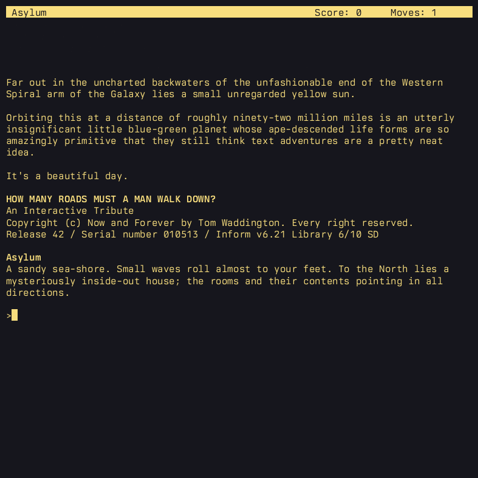
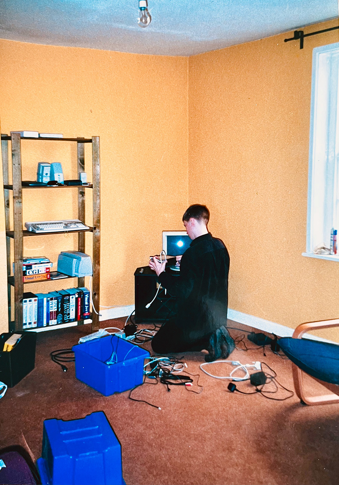

How Many Roads Must a Man Walk Down?
On Friday, 11th May 2001, Douglas Adams, author of The Hitchhiker’s Guide to the Galaxy, Dirk Gently’s Holistic Detective Agency, Last Chance to See and The Meaning of Liff, died of a heart attack in Santa Barbara, California, aged 49.
I grew up with Hitchhiker’s. Read all the books multiple times, listened to the radio series on cassette, watched the endless reruns of the TV series on UK Gold when we got cable TV in the early 90s.
This post isn’t really about Adams.

On Saturday the 12th, on ifMUD, Gunther Schmidl announced the DNA Tribute SpeedIF. And then on Sunday morning UK time, posted it to the rec.arts.int-fiction newsgroup, which is where I saw it:
From: "Gunther Schmidl" <gschmidl@gmx.at>
Newsgroups: rec.arts.int-fiction
Subject: [ANN] Douglas Adams Tribute SpeedIF
Date: Sun, 13 May 2001 09:32:11 +0100
In case anyone wants to partake in the Douglas Adams Tribute SpeedIF, this
is how it works:
You have until midnight EST today (Sunday, May 13, 2001). Take any
consecutive two-hour block and write a tribute to Douglas Adams in any IF
programming language you want. E-mail me with a download location or the
file itself when you're done.
If you take a little longer than 2 hours, no problem.
If you take a little longer than midnight EST, I won't be awake to notice.
-- Gunther
For the uninitiated, “interactive fiction” (IF) is the posh name for what we used to call “text adventures”, like ADVENT, Zork and, indeed, The Hitchhiker’s Guide to the Galaxy by Steve Meretzky of Infocom and Douglas Adams himself.
“SpeedIF” was, loosely, a semi-regular two hour contest to write a text adventure from start to finish on a specific, typically rather silly, theme. Any competition was strictly friendly, and the rules were rarely enforced to any great extent.
Writing a game in two hours was (and remains) possible due to the availability of dedicated, free IF tools with excellent standard libraries, such as Graham Nelson’s Inform. All the infrastructure and world rules are provided, you only need to code the locations, objects, and logic unique to the story you want to tell.
In 2000/01, I was working my internship year at Zurich Financial Services, living alone for the first time in my life in a strange flat, in a weird building in Cheltenham.
I think it had once been the backstage area of a theatre or something. All the walls were bright golden yellow, except the navy blue bedroom with built-in wardrobe doors painted a garish, gloss industrial orange, and I don’t think there was a single straight line or right angle in the building. The hall curved so severely and unexpectedly, I would invariably bounce off the wall on the way to the bathroom or kitchen in the middle of the night.

A tiny child moving into a Cheltenham flat in September 2000, laser-focused on the priorities.
I still keep cables in one of those blue storage boxes, and that copy of The Art of Computer Programming is still on my shelf, joined by the first two parts of Combinatorial Algorithms – the glossy dust cover on Volume 4B is repulsive.
Sadly the Amiga A1200, CRT, 56k modem and dual-speed CD-ROM drive were all lost along the way.
Between a Payroll cock-up and me having no clue whatsoever about tax codes, I was paying about three times as much tax as I should have been, on an already low salary.
After rent, food, utilities, and getting my only suit dry-cleaned, I had just about enough money left at the end of the month to buy a book (usually a fantasy doorstop from Steven Erikson, Robin Hobb, or the collected works of one of the old greats like Vance or Zelazny) or a blister of miniatures from the local Games Workshop (Iyanden Ghost Warriors for 3rd edition Warhammer 40,000 that year: the time and effort required to paint a 40 point, metal Eldar Wraithguard bright yellow offering surprisingly good bang for buck). I also worked my way through every Calvin and Hobbes collection.
So my first year away from home, I was poor as a church mouse, rarely socialised, and spent most evenings and weekends reading, painting, and programming alone in my absurd flat.
Admittedly, a quarter of a century on, that remains pretty much my idea of a good time anyway.
A starving waif, presumably in colder months, with the power of Workbench 3.1, a 50MHz 68030, 2+4MB of RAM and a 120MB IDE hard drive at his fingertips.
For my final year, I finally succumbed and spent my tax refund on a PC, dual booting Win98SE and SuSE Linux, but that Amiga is the computer I used to teach myself C, Perl, Vim, 68k assembly, Inform, HTML, JavaScript… the list goes on. Not a bad run for a machine designed as a budget stopgap and bought in 1992.
I doubt that setup would pass a DSE assessment though.
You can tell this photo was taken before May 2001 because the keycaps don’t have Dvorak legends written on the front in black felt tip.
At the time, I don’t remember any reaction by anyone to any of the entries, although I think Gunther told me it was a “a lovely tribute” when I submitted it. And two and a half decades later, I find myself cringing at some of my 21 year old self’s insufferable prose. To me now, all the good bits are obvious and minor riffs on Adams’ original text.
But I discovered today that, 20+ years later, Andrew Schultz in Chicago wrote a very sweet review. Just occasionally, the internet can still be as magical a technology as Douglas believed it to be.
But this post isn’t really about my daft little game either.
Anyway. I suspect I still have the source code backed up somewhere, most likely in the depths of some long-forgotten S3 bucket. But if you’d like to play my old game, you can download it here. You’ll need a Z-code interpreter, they’re freely available for almost every device under the sun.